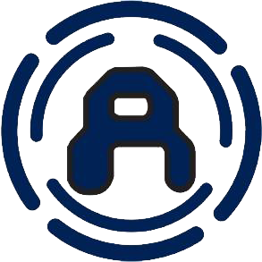
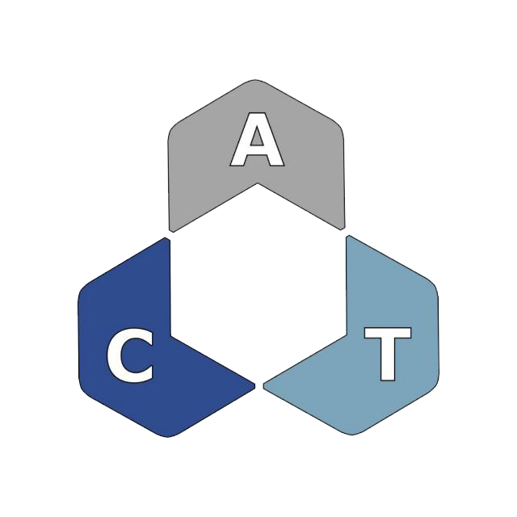

Education
Federal Institute of Education, Science and Technology of Rio Grande do Sul - IFRS
Graduated as Industrial Automation Technician
Federal University of Rio Grande - FURG
Finished 4 out of 10 semesters of Computer Engineering
Experience / Extracurricular Activities

Scientific Initiation Project - PIC
Studied for the Brazilian Mathematics Olympiad (OBMEP) as a scholarship holder granted by CNPq

Automation, Systems and Movement - ASiMov
Participated as a volunteer intern making robots for competitions on the project held by IFRS
